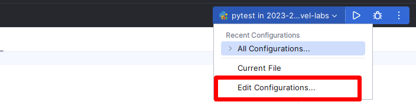
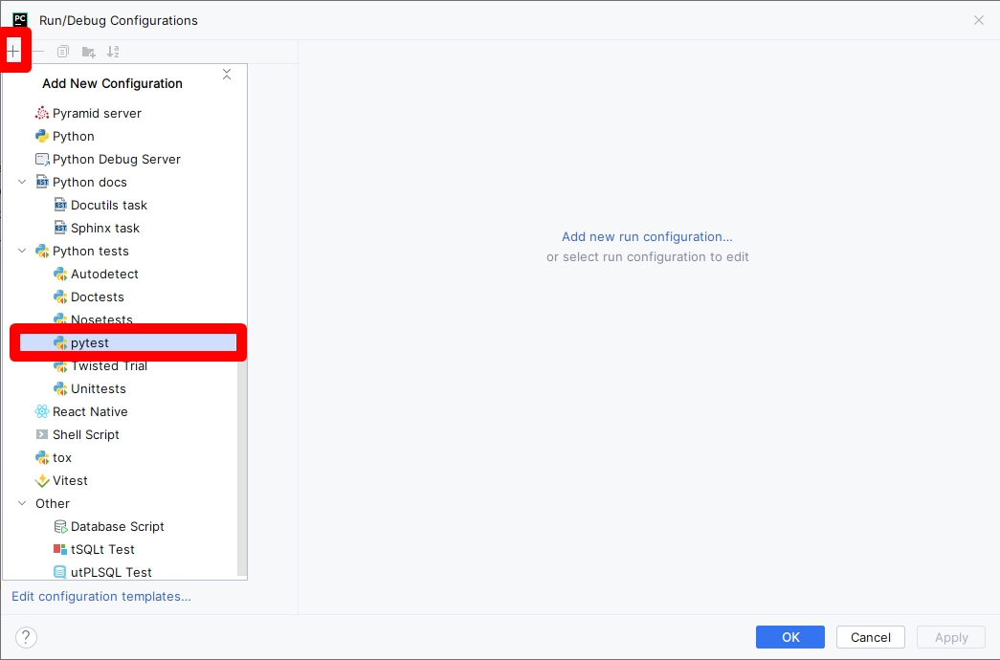
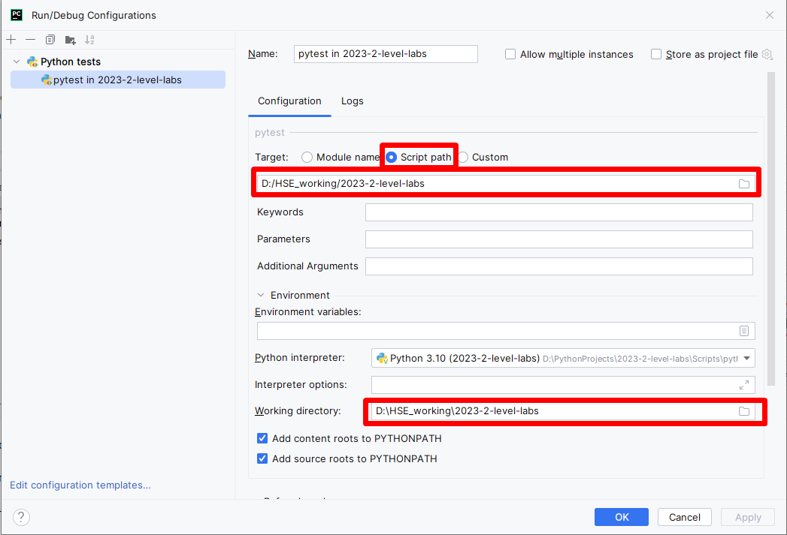
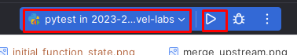
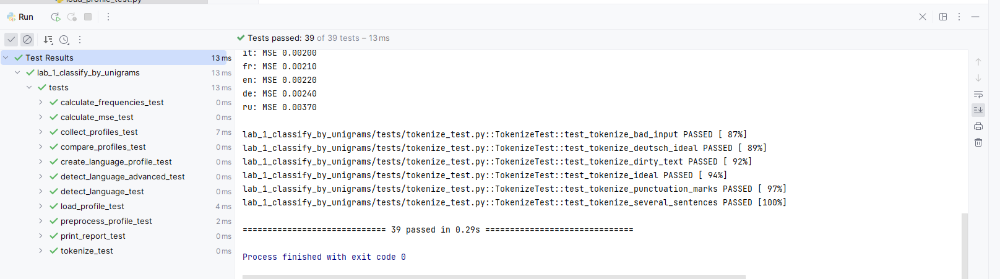
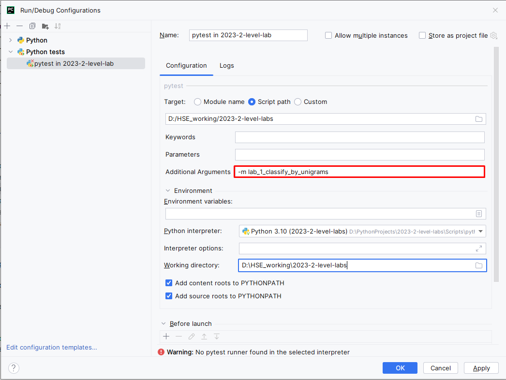

Before pushing your changes to a remote fork, you will want to check
that your code is working correctly. To do this, you can run tests
locally.
Hint
If you extract articles URLs from dynamic site, make sure you use
selenium.webdriver.Chrome and have headlessmode enabled.
To run tests locally, you need to perform several steps in PyCharm:
Install tests dependencies (ensure you have activated your
environment if you have such by running .\venv\Scripts\activate):
python-mpipinstall-rrequirements_qa.txt
Create a new configuration:

Choose pytest as a target:

Fill pytest configuration and click OK:

Run pytest configuration:

This should run all the tests in the repository. You can inspect them
by clicking through a list at the bottom of a screen.

As you have some tests failing, you want to debug them. Then, first,
you need to limit a scope of running tests and the mark level you
want to get for an assignment. For example, you might want to run
checks for a crawler configuration. Then you need to return to
configuration menu and pass additional parameters, like
-mstage_2_1_crawler_config_check.

You can choose any of the labels that are described in
pyproject.toml file and combine with a mark.
For example, running the aforementioned check for configuration
for a mark 8 will look like
-m"mark8andstage_2_1_crawler_config_check".
Hint
To running all tests for first assignment for mark 8:
-m"mark8and(stage_2_1_crawler_config_checkorstage_2_2_crawler_checkorstage_2_3_HTML_parser_checkorstage_2_4_dataset_volume_checkorstage_2_5_dataset_validation)"
Hint
When you want to debug a test, instead of running them, put
a breakpoint at the potentially vulnerable place of code and execute
debugging by clicking a ‘bug’ button.
Tests will never run until you create a Pull Request.
The very first check happens exactly when you create a Pull Request.
After that, each time you push changes in your fork, CI check will be
automatically started, normally within a minute or two. To see the
results, navigate to your PR and click either the particular step in the
report at the end of a page, or click Checks in the toolbar.
Inspect each step by clicking through the list to the left.